先从四个函数开始
看 p牛fpm未授权访问到rce的poc 兼容python2和python3，看了一下代码，开头一部分是这样的：
|
|
在开头定义了一个变量 PY2 判断当前的环境是Python2还是Python3，在 bchr() 函数里，如果是python2的环境，强制转换为字节流然后返回,是python3的话使用 bytes() 转换为字节对象返回。下面三个函数都是使用 isinstance() 判断变量是否为对应的类型，为假则转换为对应的类型
这四个函数主要解决的是Python2和Python3中字符串类型str和bytes的问题，Python3中将字符串区分为文本(str)和字节流(bytes)类型，我们在代码中使用引号包裹起来的字符串都是文本(str)类型的：
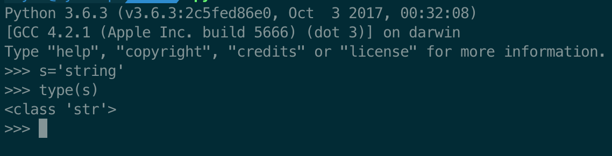
而在网络上传输的数据，或是从磁盘中读写的数据都是字节流的：
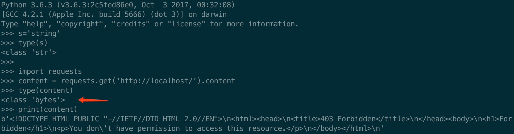
而这时如果我要使用正则表达式来从响应报文中匹配数据，就不能直接re.findall(正则,content)了：
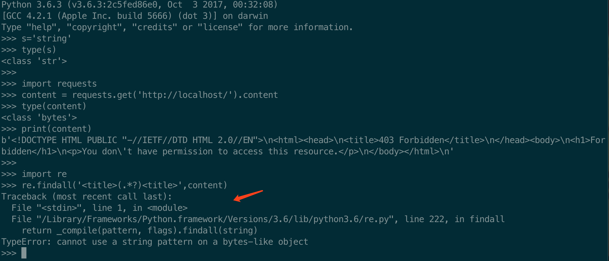
提示我们不能在bytes的字符串中使用str的字符串去匹配，Python3并不会隐式转换str和bytes。
但我们在Python2中使用同样的代码：
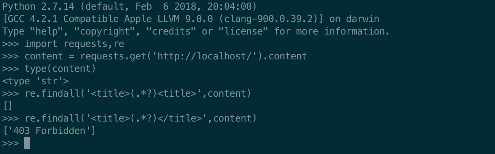
（PS 单独Python3可以这么写：
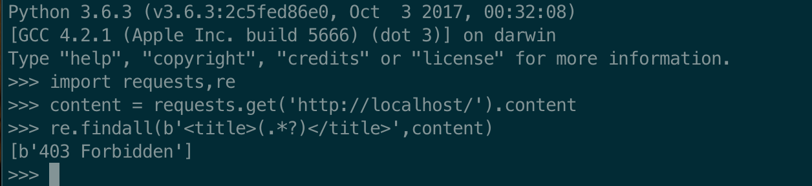
）
Python2和Python3的字符串好像有点乱？记个表格吧，之后也用得上：
| 版本 | 文本 | 字节 |
|---|---|---|
| python2 | Unicode | str |
| python3 | str | bytes |
所以开头的四个函数主要用于解决Python2和Python3字符串的问题，有了这四个函数就可以这么写来解决问题了：
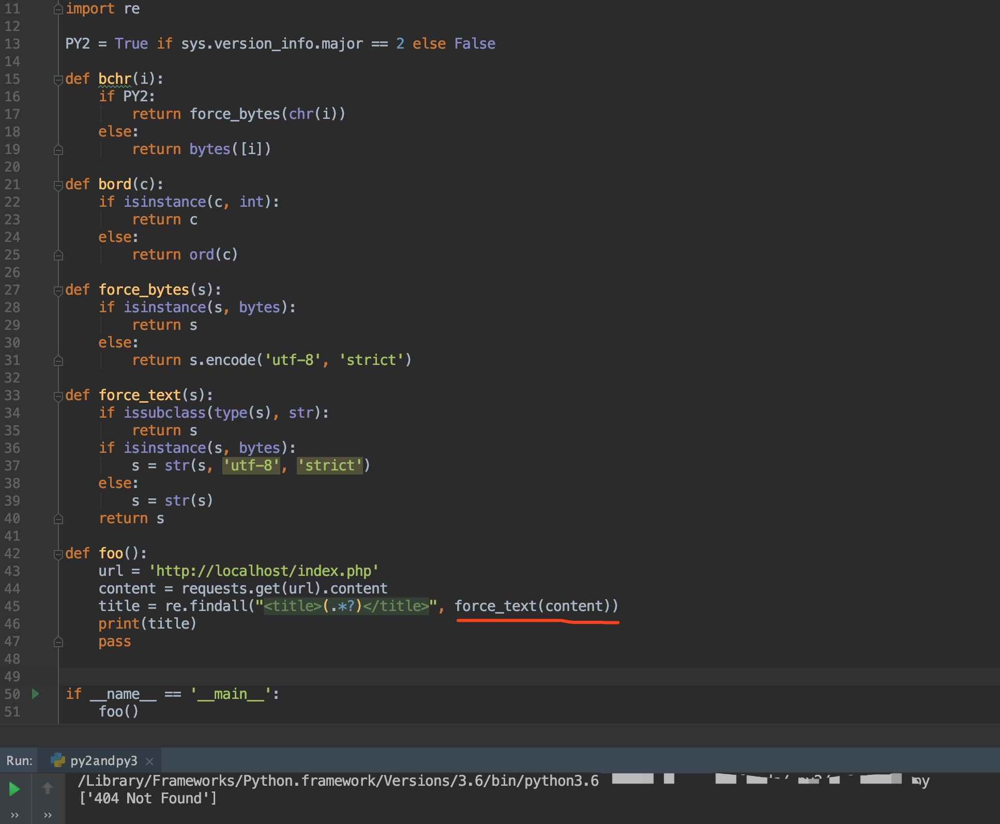
Python3自带的 __future__
但是Python2和Python3的差别不止上面一个字符串，Python官方自带了一个__future__模块用于兼容python2和python3。
__funture__的官方文档在这里：https://docs.python.org/zh-cn/3/library/__future__.html ，版本可在左上角切换，里面给出了__funture__支持的一些特性：
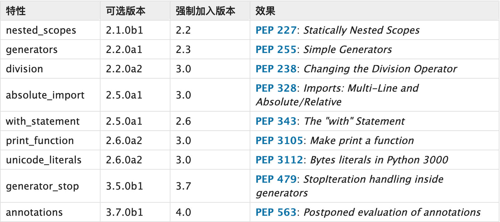
division
/表示除法，在python2和python3中表现略微不一样，具体见下表：
| 版本 | 整除 | 除法 |
|---|---|---|
| python2 | /(当除数与被除数均为整数) |
/(当除数与被除数中有一个为浮点数) |
| python3 | // |
/ |
当使用了from __future__ import division可以确保/在python2和python3中表现得一致：
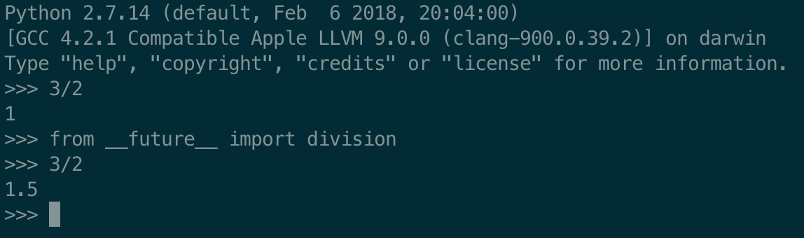
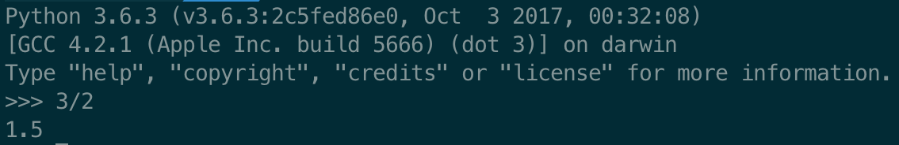
absolute_import
绝对导入/相对导入是指，通过import foo导入一个模块时，在python自带的模块中存在一个foo.py，在本目录下也存在一个foo.py，优先导入系统/本目录的模块。python2.4之前默认是优先导入本目录下的模块，如果是需要导入python的自带模块，则需要使用from __future__ import absolute_import。
with_statement
with复合语句是从python2.5中引入的，低于2.5版本的python使用with语句需要另外引入。
不过现在常见的python2版本已经是2.7了，基本用不上这个了 :)
print_function
强制使用print()这种形式的输出。
举个栗子：
|
|
正常情况下，python2有print 'ok'这种写法的，但当引入了print_function，则python2会对print 'ok'的写法报错：
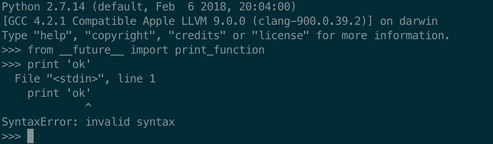
unicode_literal
对字符串使用Unicode编码，在python2早期中不支持Unicode编码，所以中文等一些字符会出现乱码。
第三方模块six
six的在线文档：https://six.readthedocs.io/
six(6)的名字取自2*3=6
统一类型
补充一下我们的表格：
| 版本 | 文本 | 字节 |
|---|---|---|
| python2 | Unicode | str |
| python3 | str | bytes |
| six | six.text_type | six.binary_type |
six把python的文本统一为six.text_type，把字节统一为six.binary_type
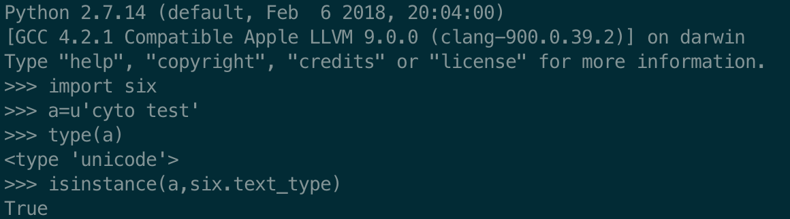
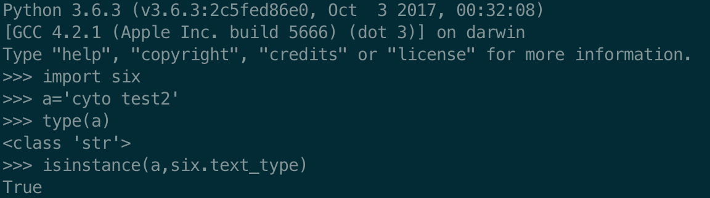
内部对象属性的重命名和模块的统一
Python3重新组织了标准库，并将一些函数移到了不同的模块中。six通过
six.moves模块为它们提供了一致的接口。
—— six官方在线文档
例如python2的HTMLParser模块，在python3中变为了html.parser，python2的import HTMLParser和python3的import html.parser在引入six之后，都可以使用from six.moves import html_parser来引入了。
支持的全部重命名可参考 https://six.readthedocs.io/#module-six.moves
其他高级自定义的方法等
比如使用 from six.moves import input 来统一 input() 的返回值类型全为str：
转换Python2的input()类型为str：
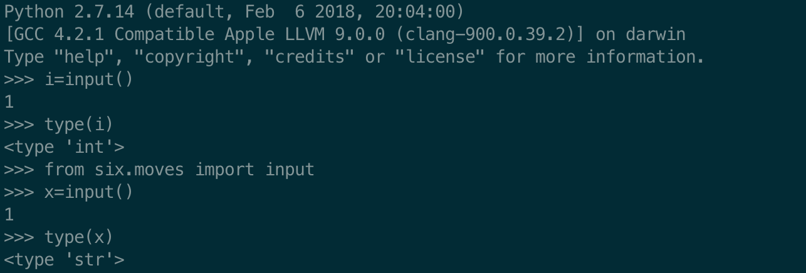
Python3的input()即为str类型：
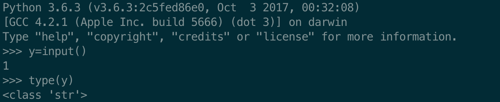
Python3新特性越来越多啦，新开发的东西还是用Python3吧~
python2&python3确实有些地方比较迷，如有错误，敬请指正 :)